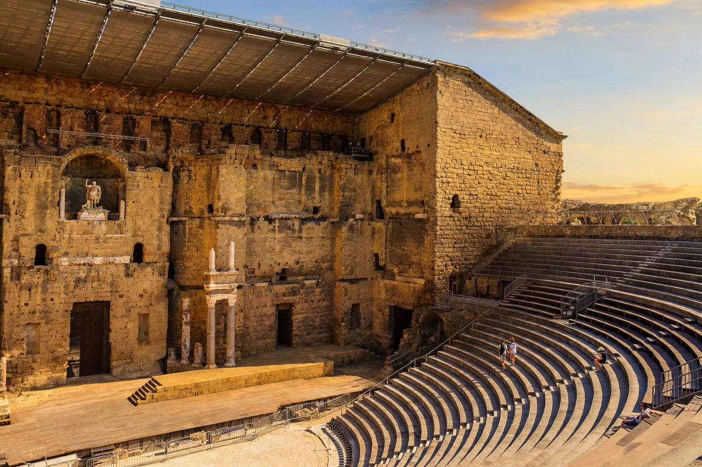

From Wikipedia, the free encyclopedia
| Orange | |
|---|---|
| Region | Provence-Alpes-Côte d'Azur |
| Department | Vaucluse |
| Population (approx.) | ~29,000 |
| UNESCO World Heritage Site | Roman Theatre and Triumphal Arch, 1981 |
Orange (Provençal: Aurenja) is a commune in the Vaucluse department in the Provence-Alpes-Côte d'Azur region in southeastern France. It is about 21 km (13 mi) north of Avignon and is renowned for its Roman architecture — the town possesses one of the best-preserved Roman theatres in Europe and a triumphal arch, both inscribed on the UNESCO World Heritage List.

Orange was founded in 35 BC by veterans of the Roman second legion as Arausio. The Battle of Arausio took place nearby in 105 BC. In the Middle Ages the town became the seat of the Principality of Orange, a fief of the Holy Roman Empire, which passed by inheritance in 1544 to William the Silent of the House of Nassau — giving the Dutch royal family its title "Prince of Orange". The principality was annexed to France by the Treaty of Utrecht in 1713.
The small principality's outsized historical influence comes from its link to the House of Orange-Nassau, whose name — not the fruit or the colour — underlies much of the "orange" symbolism in Dutch and South African history.
See also: Principality of Orange, William the Silent.